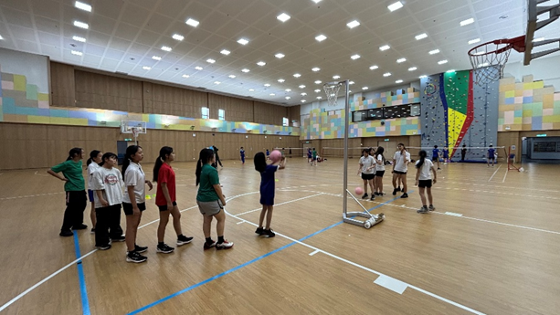
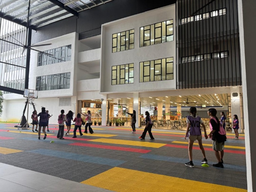
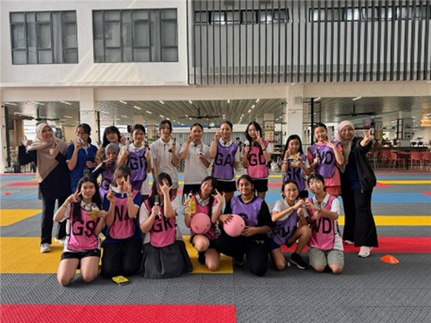

Get to know Netball
Netball CCA is a sports activity where students learn and play netball in an organised and structured
environment.
Through regular training sessions, skill-based drills, and gameplay, students develop their interest and
ability in netball while improving teamwork, discipline, and fitness. Members learn the fundamental
techniques of the sport, understand game rules and positions, and take part in team activities that
promote cooperation and sportsmanship.
Activity Day, Time, Venue & Advisor
Day: Wednesday
Time: 3:30 PM – 4:30 PM
Venue: MPH (Harmony Hall)
Advisor: Tr Nisa & Mira
Objectives
- Develop students’ basic and advanced netball skills.
- Improve physical fitness, agility, coordination, and stamina.
- Build teamwork, communication, and cooperation.
- Instill discipline, responsibility, and sportsmanship.
- Enhance understanding of netball rules, positions, and strategies.
Suitable Students & Why You Should Join
Netball is suitable for students who enjoy sports and physical activities and want to learn a team-based
game.
It is ideal for students who want to improve their fitness, coordination, and communication skills while
working together with teammates.
Students who join the Netball CCA will stay active and healthy while making new friends and developing
strong team spirit. They will also learn important values such as discipline, respect, responsibility,
and decision-making during games.
What skills will you gain?
- Passing and catching techniques
- Shooting and scoring skills
- Footwork and pivoting techniques
- Defending and positioning strategies
- Speed, agility, balance, and coordination
- Stamina and reaction time
- Teamwork and communication skills
- Leadership, confidence, and discipline
Activities we do
1. Skill Training Drills
Students practise passing, catching, shooting, and movement drills to develop their fundamental netball
skills.
2. Fitness and Conditioning
Training includes exercises that improve speed, agility, stamina, and overall physical fitness.
3. Game Practice
Students participate in practice matches to apply their skills and understand game rules and positions.
4. Team Strategy Activities
Members learn teamwork, positioning, and basic strategies used during netball games.
Photos of previous activities and achievements


